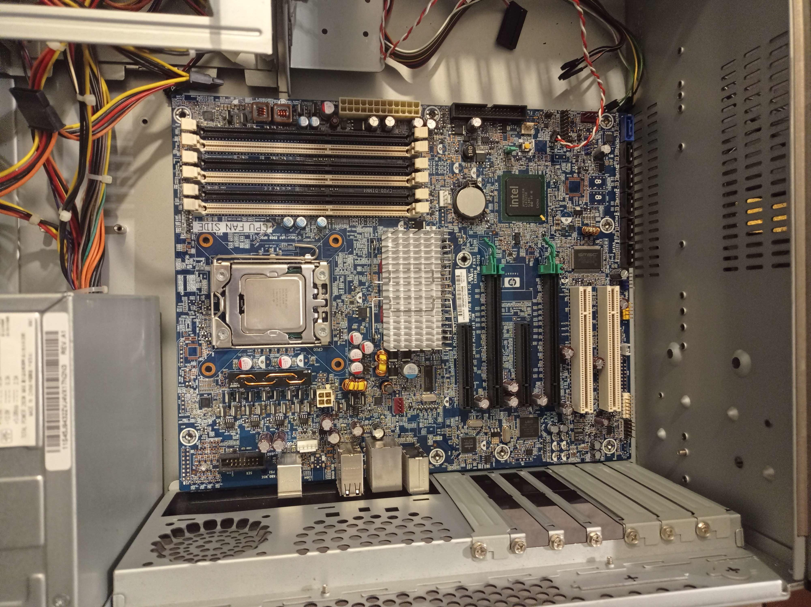
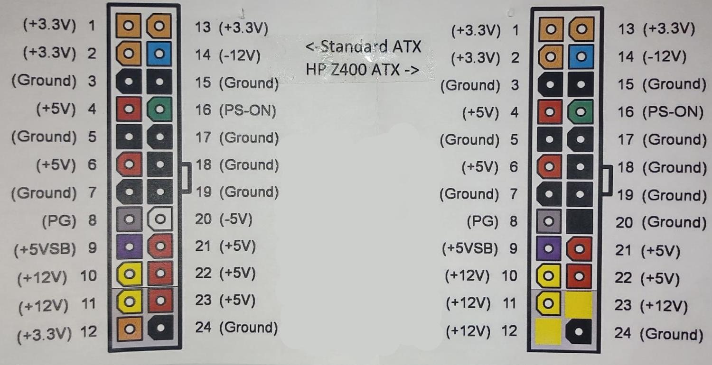
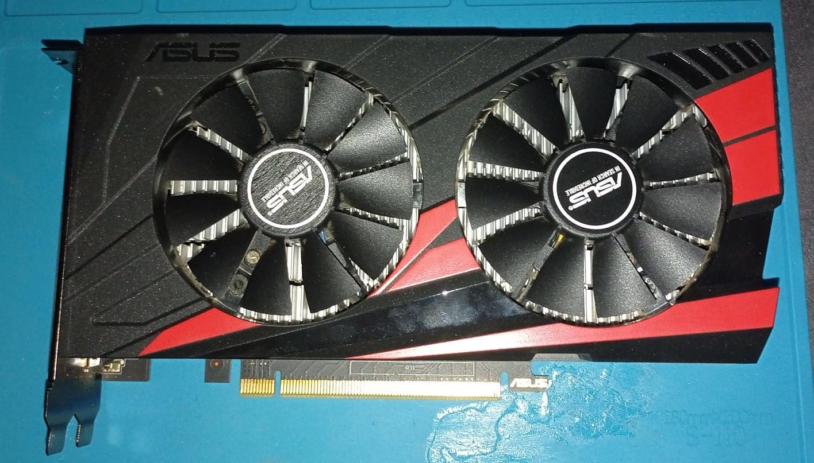
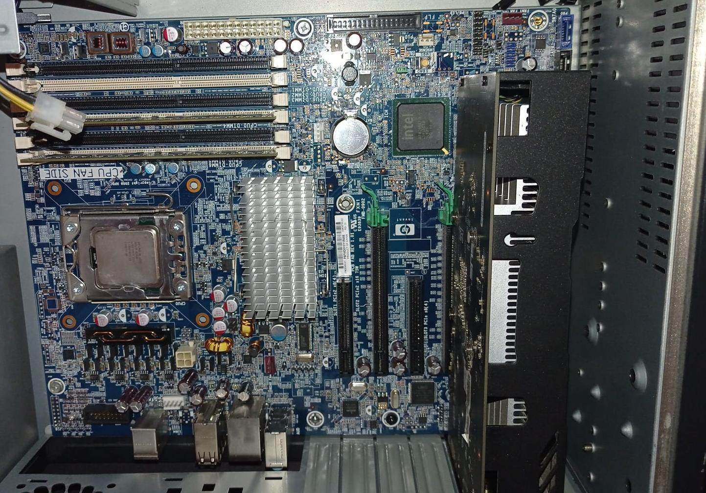
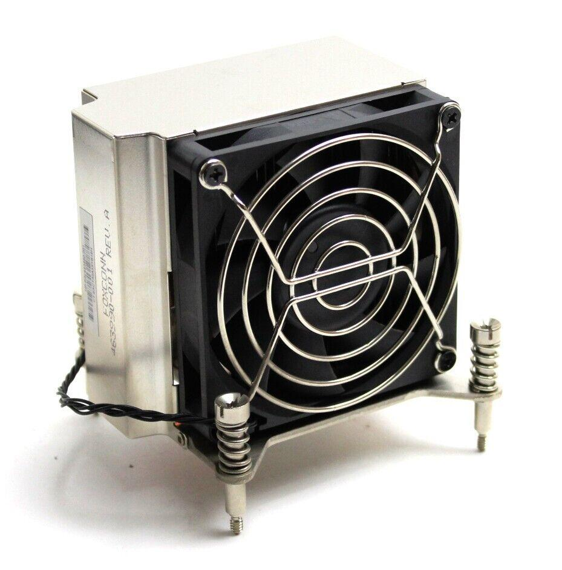
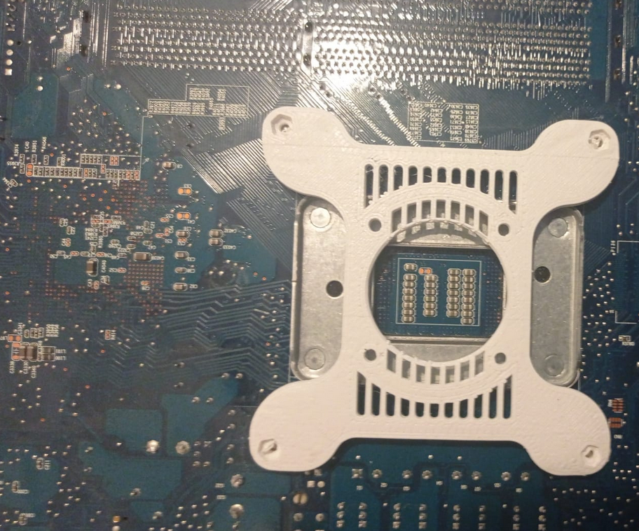
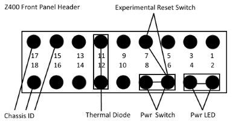
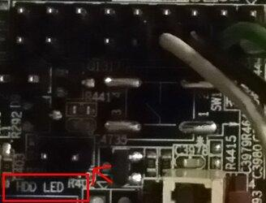

BytesOfProgress
Building a NAS
10th February 2024 / 02:30 PM
I decided, that I want to build a NAS solution inside a 19" ATX case. I choose the mainboard from the HP Z400 Workstation for that Job. It has 6 DDR3-RAM-Slots and an Intel Xeon CPU.
To be able to use this mainboard with a regular ATX Power Supply Unit, I needed to get an adapter for the 24-Pin plug, because the Pinout on the HP Z400 is different from the regular PSUs:
The Z400 mainboard does not have onboard graphics, which means I had to attach a GPU to it to get a display output. I went ahead with an Nvidia / Asus GeForce 1050 TI, which I already had from a previous built. I just had to open it up and clean it, before attaching it to the mainboard.

I decided to put it into this specific PCIe-Slot, to ensure that I have enough physical space, if I wanted to put an expansion card in the other slot later.
13th February 2024 / 05:00 PM
Then I had to figure out cooling the CPU, so I researched the CPU to find out about the socket. This is Intel's official documentation about the CPU / socket.
I decided to go with this CPU-Cooler:
Because I did not have the backplate for the socket, I had to do some research. I found this model on Thingiverse, but had to modify it, to use it.
Download STL

A small entry from March, 3rd, 2024: Even if it seems a little sketchy, the backplate still holds up great!
Now I had to figure out where and how to plug in the front panel LEDs and buttons.
This is how the Power-LED and Power-button need to be attached:
The HDD-LED is plugged into a different place, which is right next to the other pins:
26th February 2024 / 05:00 PM
Now that the hardware works and is all wired properly, it is time for software!
The first thing I wanted to do, was installing Ubuntu or Debian on it, to test out if everything is detected and properly working.
Well. Every time I tried to boot ANY Linux distribution, I got a kernel panic. Time to do some research.
Apparently, this has something to do with the BIOS, which needs to be updated to at least 3.61 Rev.A.
To update the BIOS, I tried installing Windows on it, because HP provides a Windows executable for the BIOS update.
back